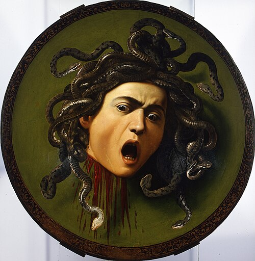
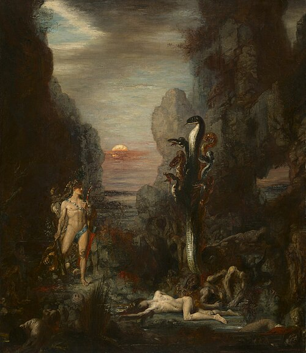

Verify every agent change before it ships
Embedded neural code hygiene, architectural untangle, polyglot SymbolGraph, 12-tool MCP, and event-driven hooks paired with independent TestMu AI Kane CLI verification.
Two independent gates in one verification loop
No agent harness can audit itself. Pair local structural, neural, and hook verification in Rust with independent live browser and mobile proof in TestMu AI Kane CLI.
Static Rust verification spine
A single static binary runs neural maintainability scoring, cycle untangling, symbol blast-radius analysis, web-wired MCP guidance, and atomic MVCC commits locally before code ever leaves the machine.
- Neural codehygiene Embedded ternary neural scorer with 0.000000 parity and median 0.845 maintainability across polyglot trees.
- Architectural untangle Pearce SCC cycle untangling, SimiFlow structural clone detection, Genome co-change twins, and Deslop cleanup.
- Polyglot SymbolGraph Incremental stem call-graph indexing for deterministic 1-hop failure rewind straight to the offending file and line.
-
Web-wired MCP & SCA
Keyless Keenable
refit_search, OSV.dev vulnerability checks, and SEP-2640 annotated tools inside one compact server. - Event-driven hooks <5 ms PreToolUse and PostToolUse guards for Claude Code, Cursor, Gemini CLI, and Kiro with AVX2 secret and Unicode Tag/BiDi shielding.
- Atomic MVCC WAL BLAKE3 CAS shadow worktrees and crash-safe write-ahead logging roll back broken edits cleanly without dirtying the repo.
Antigravity MCP tool budget
Keep room for your coding tools instead of burning the entire 100-tool MCP cap on browser primitives.
Gate 4 closed-loop execution
Dual-layer README truth matrix
Every claim in documentation is cross-checked statically by refit --verify-docs and dynamically by TestMu AI Kane CLI.
| Documented claim & proof | Verdict |
|---|
Converged architecture and open-source lineage
Rather than bolting together fragile scripts, refit distills proven graph, neural, security, and browser verification ideas into one zero-runtime-dependency Rust binary.
| Source inspiration | Capability in refit | How it reinforces the loop |
|---|---|---|
| proxysoul/stem | Polyglot SymbolGraph | Tree-sitter indexing across languages powers instant 1-hop blast-radius rewind when a test or runtime check fails. |
| brianbell-x/codehygiene & bevowoved/codehygiene | Embedded ternary neural scorer | Runs local maintainability scoring at 0.000000 parity (median 0.845) with zero external model server or API cost. |
| Clean-room Genome, SimiFlow, Untangle, Deslop & ASD-STE100 | Structural hygiene & docs clarity | Detects co-change twins, near-duplicate clones, Pearce SCC dependency cycles, generated slop, and ambiguous prose. |
| OpenClaw | Event-driven agent hooks | Sub-5 ms PreToolUse and PostToolUse lifecycle guards enforce hygiene and push gating across Claude Code, Cursor, Gemini CLI, and Kiro. |
| Keenable | Web-wired keyless MCP search | Grounds agent patches in live technical documentation through refit_search alongside OSV.dev SCA inside a 12-tool SEP-2640 surface. |
| Kingfisher & Gitleaks | Secret & Unicode shield | AVX2 pattern scanning blocks leaked credentials, hidden Unicode Tag/BiDi characters, and unredacted .evidence archives. |
| TestMu AI Kane CLI | Independent Gate 4 runtime proof | Executes deterministic 0-credit _test.md replays across real desktop and mobile viewports so no agent grades its own homework. |
Three invariants behind the loop
Archival specimen plates representing the static shield, closed-loop untangle and repair, and independent documentation truth.


Install tonight in one binary
Install from crates.io or prebuilt binaries, wire the agent skill and event-driven hooks, and initialize your repository in under a minute.
$ cargo install refit $ cargo binstall refit $ npx skills add bevowoved/refit --skill refit $ refit init .